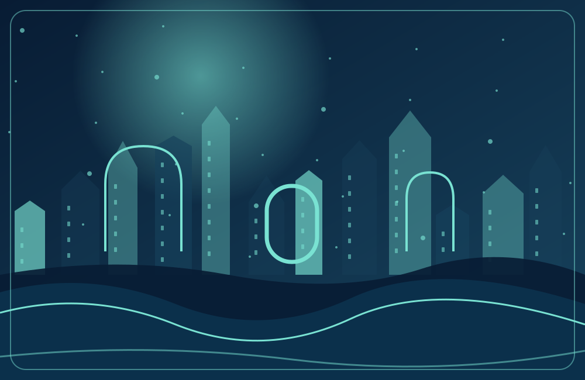

نمونهٔ قابل اجرا برای توسعه
هر آینه، روایتی پنهان دارد
روشا در شش شهر سفر میکند. شواهد را پیدا کن، مشاهده را از برداشت جدا کن و پیش از نتیجهگیری روایت دوم را هم بررسی کن.
تعارضها و الگوها تشخیص روانشناختی محسوب نمیشوند.

روشا در شش شهر سفر میکند. شواهد را پیدا کن، مشاهده را از برداشت جدا کن و پیش از نتیجهگیری روایت دوم را هم بررسی کن.
تعارضها و الگوها تشخیص روانشناختی محسوب نمیشوند.
